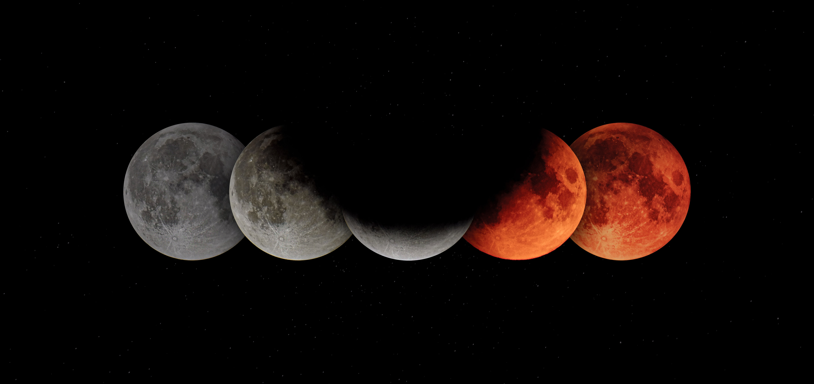

월식은 태양 - 지구 - 달의 위치로 배열될 때 일어나게 되며 이때 달의 위상은 보름달인 망이 된다. 월식은 달이 지구의 본 그림자 속에 들어갈 때 관측되는 개기 월식과 달이 지구의 본 그림자와 반 그림자 사이에 위치할 때 관측되는 부분 월식으로 나뉜다.
이 때, 지구의 그림자에 들어간 달표면에서는 개기 일식이 일어난다. 월식은 일 년에 2번 이상은 일어난다. 월식은 지구의 밤인 곳 어디에서나 볼 수 있기 때문에 월식이 자주 관측된다. 고대 그리스 시대에 아리스토텔레스는 월식이 일어날 때의 그림자가 지구의 그림자이며, 이것은 지구가 둥글다는 증거라고 하였다.